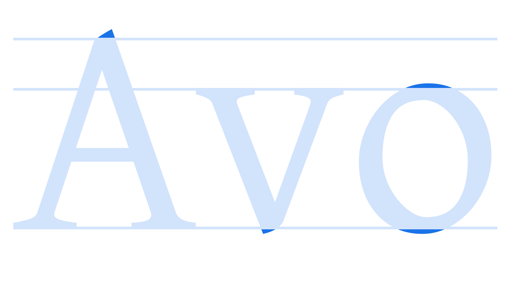

Overshoot
By Google Fonts Knowledge contributors · Google Fonts Knowledge.
Original article · Source on GitHub · CC BY-SA 4.0. Text, illustrations and existing credits reproduced from the licensed Knowledge repository. Open Shelf adapted the layout and links; these adaptations are also CC BY-SA 4.0. No endorsement implied.
In type design, an overshoot is the part of a letterform that extends above or below the vertical dimensions of flatter glyphs. In the Latin script, common characters with overshoots incorporated into their design include the lowercase “o”, which slightly extends above the x-height and below the baseline, and the apex of the uppercase “A”, which extends above the cap height.
The purpose of these overshoots is to create the optical illusion that all letterforms are aligned, whether their tops and bottoms are angled, curved, or flat. Without overshoots, our eyes interpret these characters as appearing shorter than the rest.

Typeface: David Libre
In practice, there are many elements of a typeface’s design that could be considered overshoots, such as the cupped serifs present on some old style serif typefaces.